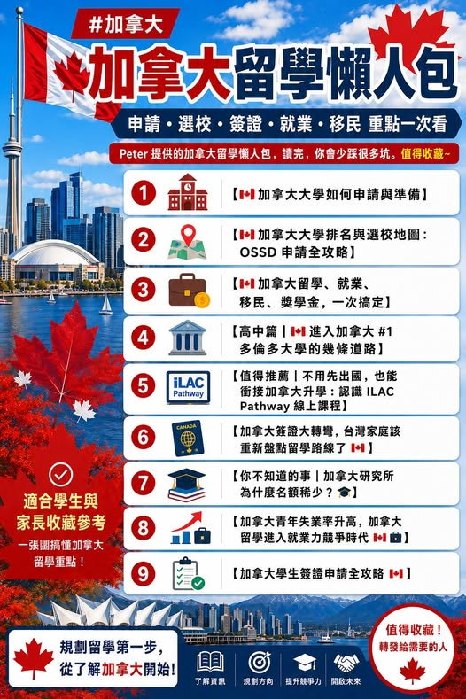

《看懂制度，選對世界》第一集
加拿大留學懶人包：申請、簽證、就業與移民
Peter 提供的加拿大留學懶人包，讀完，你會少踩很多坑。值得收藏~ 如果你正在規劃加拿大留學，不管是想申請加拿大大學、了解 OSSD 升學路線、查詢加拿大大學排名、準備學生簽證，或是關心畢業後就業與移民機會，這幾篇…

【加拿大留學懶人包｜申請、選校、簽證、就業與移民一次整理】 Peter 提供的加拿大留學懶人包，讀完，你會少踩很多坑。值得收藏~ 如果你正在規劃加拿大留學，不管是想申請加拿大大學、了解 OSSD 升學路線、查詢加拿大大學排名、準備學生簽證，或是關心畢業後就業與移民機會，這幾篇文章都很適合先讀一輪。 從升學申請、選校策略、ILAC Pathway、學生簽證，到加拿大青年失業率與研究所名額限制，幫助學生與家長更完整理解加拿大留學的真實樣貌。 【加拿大大學如何申請與準備】 【 加拿大大學排名與選校地圖：OSSD 申請全攻略】 【 加拿大 篇【 進入加拿大 的幾條道路】 【加拿大簽證大轉彎，75%印度學生遭拒後，台灣家庭該重新盤點留學路線了 】 為什麼 【 節節升高，加拿大留學進入就業力競爭時代 】 【 申請全攻略 】